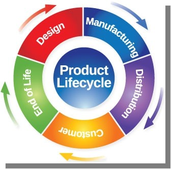

Qu’est-ce que le PLM ?
Le PLM assure le suivi de l’ensemble des informations liées aux produits tout au long de leurs cycles de vie. C’est l’un des éléments clés de cette nouvelle révolution industrielle en permettant à l’ensemble des acteurs et des outils d’accéder à une donnée fiable et à jour. Il devient en quelque sorte l’épine dorsale du système d’information de l’entreprise.

Littéralement « Product Life Management – Gestion du cycle de vie des produits », le PLM donne un cadre organisationnel, un ensemble de concepts, méthodes et outils logiciels dont le but est de créer et de maintenir les produits industriels tout au long de leur cycle de vie, depuis l’établissement du cahier des charges du produit et des services associés jusqu’à la fin de vie, en passant par le maintien en conditions opérationnelles. Le cycle de vie d’un produit se définissant en 4 grandes étapes : conception, développement, production et fabrication, et services (utilisation(s) et fin de vie).
Pour un même produit, le développeur conçoit, le marketing valide les couts, le designer étudie le packaging, le responsable de la production analyse les étapes du procédé… le fait de mettre en commun ces données sur un système central et de les partager avec les départements semblent aujourd’hui logique. Ce référentiel commun est devenu indispensable, chacun ayant sa « vue » correspondant à ses besoins.
Et si au cours des ans, une pièce est modifiée, chacun aura connaissance des produits impactés par de tels changements.
- Les 4 avantages à en tirer
-
Le PLM reste un outil clé pour « optimiser l’innovation », il est l’outil efficace pour raccourcir le cycle de mise sur le marché de(s) produit(s) avec un ROI rapide.
-
Un outil PLM propose une toute nouvelle manière de traiter les informations. L’un de ses grands avantages est de réduire les frontières entre les métiers, dans un souci de lisibilité constante.
-
Outre ses fonctions de partage et de centralisation, le PLM garantit un accès sécurisé aux données pour les employés. Les systèmes de protection (procédure d’authentification, gestion des autorisations d’écriture et de lecture) mis en place apportent un vrai « + ».
-
Avec sa transversalité, le PLM est une solution pour favoriser le travail en collaboration. Il aide à améliorer la communication interne, mais aussi à faciliter les échanges à tous les niveaux (sites de production, prestataires, sous-traitants et clients).